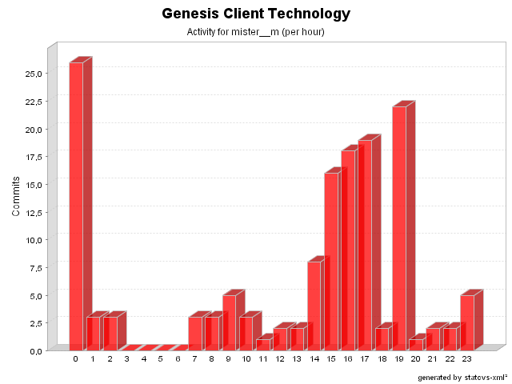

| Login: mister__m Fullname: mister__m Revisions: 146 Lines of Code: 3838 Added Lines of Code: 5050 Lines of Code per Change: 26,3 |

| Date | Author | File/Message |
|---|---|---|
| 28/02/05 19:34 | mister__m | Merged with 2.1-RC1 as specified by issue # 199.
(21 Files changed,
2075 Lines changed) test-src/net/java/dev/genesis/ui/thinlet/ThinletBinderTest.java 1.2 added 1030 src/net/java/dev/genesis/ui/thinlet/BaseThinlet.java 1.31
(+40
-15)
test-src/net/java/dev/genesis/ui/thinlet/ThinletUtils.java 1.2 added 165 src/net/java/dev/genesis/ui/thinlet/metadata/ThinletMetadataFactory.java 1.2
(+7
-1)
test-src/net/java/dev/genesis/GenesisTestCase.java 1.2 added 33 src/net/java/dev/genesis/ui/thinlet/ThinletBinder.java 1.44
(+64
-47)
src/net/java/dev/genesis/ui/ActionInvoker.java 1.4
(+2
-6)
test-src/net/java/dev/genesis/ui/controller/DefaultFormControllerTest.java 1.2 added 111 src/net/java/dev/genesis/registry/Registry.java 1.5
(+8
-0)
src/net/java/dev/genesis/commons/beanutils/converters/DefaultConverter.java 1.2 added 62 test-src/net/java/dev/genesis/ui/ActionInvokerTest.java 1.2 added 65 src/net/java/dev/genesis/commons/beanutils/ConverterRegistry.java 1.5
(+67
-48)
test-src/net/java/dev/genesis/mockobjects/MockForm.java 1.2 added 61 src/net/java/dev/genesis/ui/metadata/ViewMetadataFactory.java 1.2 added 23 test-src/net/java/dev/genesis/mockobjects/MockViewHandler.java 1.2 added 38 src/net/java/dev/genesis/ui/controller/DefaultFormController.java 1.29
(+32
-15)
src/net/java/dev/genesis/ui/metadata/ViewMetadata.java 1.2 added 79 src/net/java/dev/genesis/ui/thinlet/metadata/ThinletMetadata.java 1.7
(+9
-53)
test-src/net/java/dev/genesis/ui/controller/MockFormController.java 1.2 added 121 src/net/java/dev/genesis/ui/metadata/DataProviderMetadata.java 1.16
(+7
-1)
src/net/java/dev/genesis/helpers/TypeChecker.java 1.2 added 51 |
| 27/01/05 22:19 | mister__m | Methods marked @deprecated as specified by issue # 188.
(1 Files changed,
15 Lines changed) src/net/java/dev/genesis/ui/thinlet/BaseThinlet.java 1.30
(+15
-0)
|
| 25/01/05 00:44 | mister__m | Minor fix.
(1 Files changed,
1 Lines changed) src/net/java/dev/genesis/ui/thinlet/BaseThinlet.java 1.29
(+1
-1)
|
| 19/01/05 15:49 | mister__m | Issue # 181 fixed.
(2 Files changed,
7 Lines changed) src/net/java/dev/genesis/ui/controller/DefaultFormController.java 1.27
(+4
-3)
src/net/java/dev/genesis/ui/metadata/DataProviderMetadata.java 1.14
(+3
-2)
|
| 19/01/05 09:04 | mister__m | Minor fix regarding issue # 173.
(1 Files changed,
2 Lines changed) src/net/java/dev/genesis/ui/metadata/DataProviderMetadata.java 1.13
(+2
-2)
|
| 17/01/05 22:22 | mister__m | Issue # 173 fixed. When nothing is selected and the indexField type is an int, it's set
to -1.
(1 Files changed,
17 Lines changed) src/net/java/dev/genesis/ui/metadata/DataProviderMetadata.java 1.12
(+17
-18)
|
| 14/01/05 14:50 | mister__m | Additional fix for issue # 111.
(1 Files changed,
4 Lines changed) src/net/java/dev/genesis/ui/thinlet/BaseThinlet.java 1.28
(+4
-0)
|
| 14/01/05 14:36 | mister__m | Fix for issue # 111.
(4 Files changed,
124 Lines changed) src/net/java/dev/genesis/ui/thinlet/BaseThinlet.java 1.27
(+81
-26)
src/net/java/dev/genesis/ui/controller/FormController.java 1.12
(+2
-2)
src/net/java/dev/genesis/ui/thinlet/ThinletBinder.java 1.43
(+19
-5)
src/net/java/dev/genesis/ui/controller/DefaultFormController.java 1.26
(+22
-8)
|
| 14/01/05 09:30 | mister__m | Fixed mistake related to issue # 130 refactoring.
(3 Files changed,
14 Lines changed) src/net/java/dev/genesis/ui/controller/DefaultFormController.java 1.25
(+8
-13)
src/net/java/dev/genesis/ui/thinlet/ThinletBinder.java 1.42
(+3
-1)
src/net/java/dev/genesis/ui/controller/FormController.java 1.11
(+3
-2)
|
| 14/01/05 08:46 | mister__m | Fix for issue # 130.
(2 Files changed,
61 Lines changed) src/net/java/dev/genesis/ui/controller/FormController.java 1.10
(+2
-0)
src/net/java/dev/genesis/ui/controller/DefaultFormController.java 1.24
(+59
-8)
|